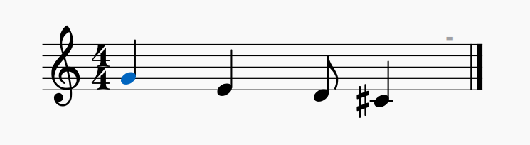

gizmo is a simple toolbox to create some simple melodies using python. The beauty about is, that you only need a single motive to create a little song.
Note: This program uses the music21 library.
You can install the only python module that is not in the default library using pip:
pip install music21
For a simple toolkit you need a simple notation that abides to the unix philsphoy. So we made a now one that consists simply of lines in a plain text file.
Every line contains the information about one note. Seperated by apostrophes there are different attributes specified for each note. Every attribute seperated like this is called a ‘part’:
Here an example in the gizmo notation:
1.00,G4
1.00,E4
0.50,D4
1.00,C#4
Now the same example in sheet music:

After you fully processed your music in the gizmo notation you can run it through the script called final-converter to export your work as a .musicXML file. This file can be viewed and further edited/processed in other free software like MuseScore.